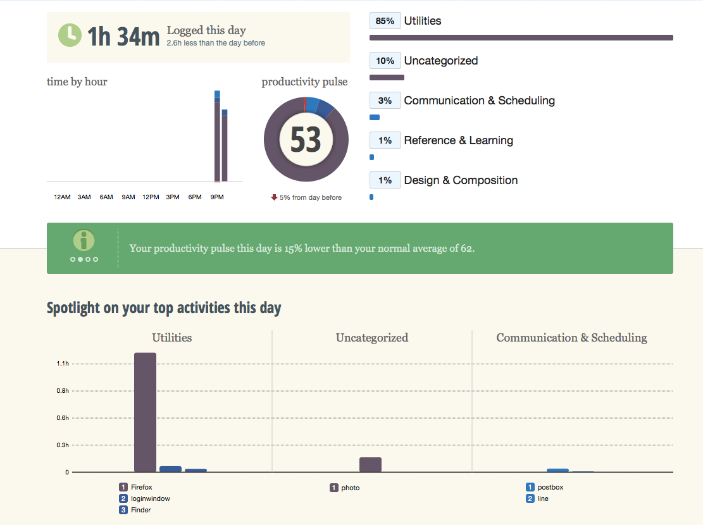

How I Intended to Research with RescueTime
In addition to diaries, the time-tracking app RescueTime was installed on C's laptop to generate research data during my second visit to the home with the promise to uninstall it after the research if she desired. The app was designed for users to monitor their own productivity when using the computer by categorizing applications into different purposes, such as work and play.
My concern, however, was not with productivity. With reports of applications used at various time of the day, I thought RescueTime could be useful in identifying the application combinations C used while studying and the amount of time she spent on each application.
Below is an example report on my own application usage on my laptop.

The Application Gone Awry
By the time I arrived at the flat to conduct the concluding interview, C and I discovered that RescueTime could not be launched on her Windows 8 machine. Therefore, no data was generated from her two-week usage of the computer.
Due to the mishap, I could only ask C about her assumption of the tracking application. Her response was that she did not check how RescueTime was functioning on her computer at all and had no knowledge that it was not functioning.
Researcher: RescueTime wasn't installed successfully, so we can't tell if it had any effect on your studying habits or not. Before you learned that it hadn't been functioning, you did not check its tracking reports.
C: Right. It had no effect on my studies. Well, maybe a little bit. I tried to be careful with the contents I'm looking at while browsing online.
Researcher: Did you? How?
C: Well, I had this thought, but I don't think I really changed my behavior.
Much has been discussed about self-monitoring applications and how they potentially change how we understand our bodies and selfhood (e.g. Viseu & Suchman, 20121; Nafus & Sherman, 20142). In Foucauldian perspectives, new subjectives under discipline emerge out of practices of measurement and quantification. C clearly expressed such tendencies in the interview, but it was difficult to tell if such mentality is actualized in her studying habits since we did not have the opportunity to review the breakdown of her application usage in the app-generated reports.
Reflections
In hindsight, the decision to introduce RescueTime to C was not a good one. Even if it had functioned properly and generated usage reports, it would have been difficult to associate the data with digital reading practices and to make further connections with the holistic reading experiences at home.
I also realize that introducing RescueTime to C was similar in practice to introducing "Smart technologies" to the home environment. The technology may have been developed with the ambition to have positive impact on its users, but users may have trouble integrating it into their daily routines (e.g. Fink et al, 20133).
RescueTime is still potentially useful for studies concerning tracking technologies, productivity, and users' habits, but it did not contribute much to my ethnography.
Viseu, A., & Suchman, L. (2012). Wearable Augmentations: Imaginaries of the Informed Body. In J. Edwards, & et al. , Technologised Images, Technologised Bodies (pp. 161 - 184). New York: Berghahn Books. ↩
Nafus, D., & Sherman, J. (2014). This one does not go up to 11: The quantified self movement as an alternative big data practice. International Journal of Communication, 8, 1784-1794 ↩
Fink, J., Bauwens, V., Kaplan, F., & Dillenbourg, P. (2013). Living with a vacuum cleaning robot. International Journal of Social Robotics, 5(3), 389-408 ↩